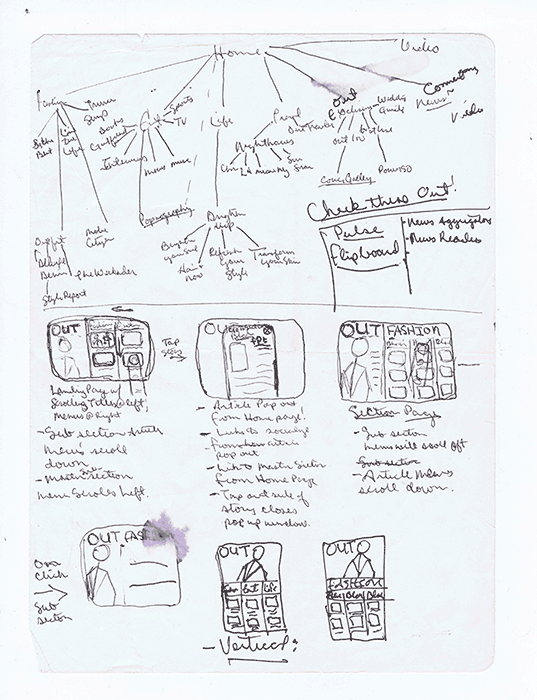
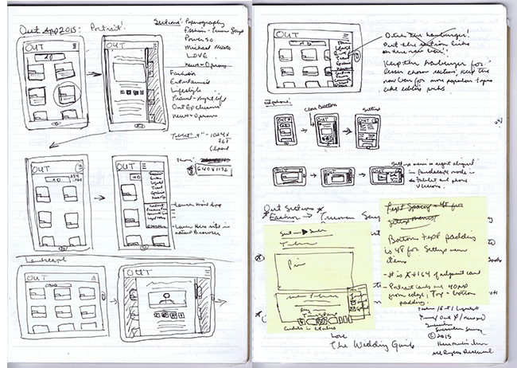
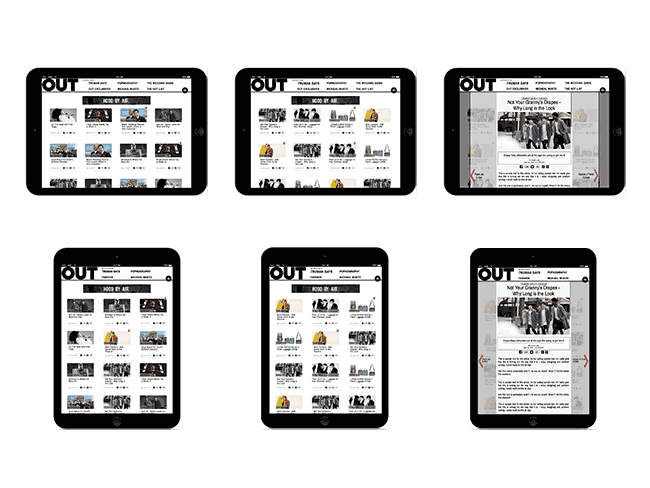

I’ve always loved magazines, and have followed their progression from monthly glossies to retweets. In fact I even wrote a bit for Refinery29 when she was a baby. So when I was assigned to build an “App That You Would Use!” during my graduate study, I figured, why not make a magazine for the tablet. No browsers, no excessive tabs and loading time. Just power on and read and covet beautiful things.
The full assignment was to design an app and use ActionScript 3 to completely build this sucker from scratch.
SPOILER ALERT: Nosaj and ActionScipt 3 throw each other off the cliff in the end, but Nosaj is saved miraculously and realizes that his first UX wasn’t that bad and that he wants to do it again and again and again!
I’ve revisited this assignment recently as a design study using some of the design thinking and tools that I’ve acquired over the last several months in order to continue my growth as a designer.
It didn't take long to realize that competition was nil. Wired was doing the best job and GQ was using pdf hotspots. There really were no fashion editorial men’s magazines that were doing what I envisioned for OUT.com on the tablet. I was addicted to my iPad at the time so I knew what interactions I liked and which ones I didn’t. It would have to be something easy and addictive like Flipboard.
So I started sketching, using Flipboard as an inspiration for both my design and development research.
My hypothesis was that building an app that could bypass the clunkiness of using browsers on a tablet would be more beneficial to readers. Who would be my guinea persona? Me, of course!
I happened to be interning with the Digital Creative Director at Here Media at the time, so it was a perfect opportunity to try to expound on what I now know to be an existing MVP, the OUT.com RSS feed. That there were already subscribers to the OUT.com rss feed meant that there would of course be some viability to creating a more robust tablet experience based off of this. Looking back, I wonder how many rss feed subscribers would have responded positively to an email survey inquiry regarding their interest in an OUT tablet app.
I presented my project idea to the 'client', my Creative Director, and he informed me that the idea was great, but that the budget and readership were not. Out Magazine is a bonafide glossy, one of the few successful ones left in face! This digital product would need to trump the current website and help drive traffic overall, which would probably need a lot more resources and funds allocation, than my one man design team could allow for.
This nugget actually fed my curiosity for investigating the publishing app platform and still does. If people were going to go from glossy to glassy and be bound by browser UI, the experience would need to be beautiful. Or as beautiful as my novice Illustrator could muster. This was my first foray away from Photoshop for a UI project as well.
I presented my prototype to my Professor and to the Creative Director and Marketing Manager, and the feedback I received was great, they loved the logic of my app, though Readership at OUT didn’t really demand such a product.
The app’s ultimate setback was the RSS feed. It would need to be far more robust in order to facilitate my design. ActionScript 3 wasn’t good at adding tags into xml, I learned. It would have to be reprogrammed which would cost money etc… But it was viable! My design had salience!
My original prototype was a little less polished and done in Illustrator, but I’ve recently reinterpreted it in an effort to master Sketch. Take a look!
 Since 2012 when I designed this app, the website itself has undergone a change that pretty almost mimics the navigation that I envisioned bak in 2012. I'va also updated the design to mirror that of the homepage.